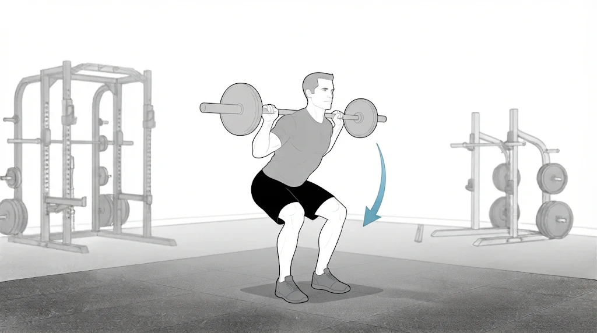

Extensions des mollets

Debout sur la machine, épaules sous les coussins, l'avant des pieds sur la marche, talons dans le vide.
1. Monter sur la pointe des pieds le plus haut possible en contractant les mollets.
2. Redescendre lentement jusqu'à sentir l'étirement, talons sous le niveau de la marche.
Variante : sur une marche avec un haltère dans une main, une jambe après l'autre.
Conseil : garder les genoux tendus mais pas verrouillés, et marquer une pause en haut du mouvement.
Presse inclinée

Allongé sur le siège de la presse, dos et tête plaqués, pieds largeur d'épaules sur la plateforme.
1. Déverrouiller la charge, puis plier les genoux pour descendre la plateforme vers la poitrine.
2. Pousser avec les talons jusqu'à avoir les jambes presque tendues.
Variante : pieds placés plus haut sur la plateforme pour cibler davantage les fessiers et les ischio-jambiers.
Conseil : ne jamais verrouiller les genoux en haut, et garder le bas du dos collé au dossier.
Squat

Debout, pieds largeur d'épaules, barre posée sur le haut du dos (trapèzes).
1. Pousser les fesses en arrière et plier les genoux pour descendre jusqu'à avoir les cuisses parallèles au sol.
2. Remonter en poussant sur les talons jusqu'à être debout.
Variante : à la machine guidée (Smith machine), plus stable pour débuter.
Conseil : dos droit, regard devant, et genoux dans l'alignement des pointes de pieds.
Kickback

Debout face à la machine, mains sur les poignées, le talon d'une jambe placé contre le rouleau.
1. Pousser la jambe vers l'arrière en contractant le fessier, sans cambrer le dos.
2. Revenir lentement à la position de départ, puis changer de jambe.
Variante : à la poulie basse avec une sangle de cheville.
Conseil : le bassin reste fixe, seule la jambe bouge.